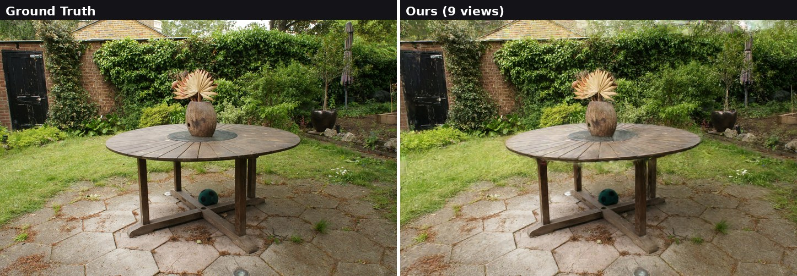
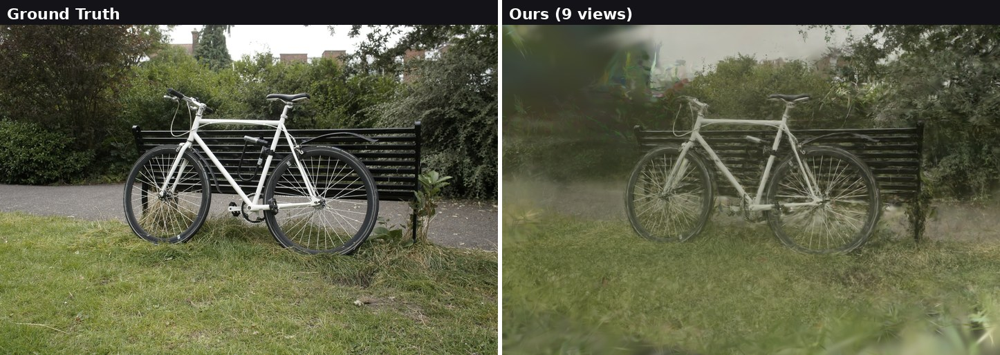
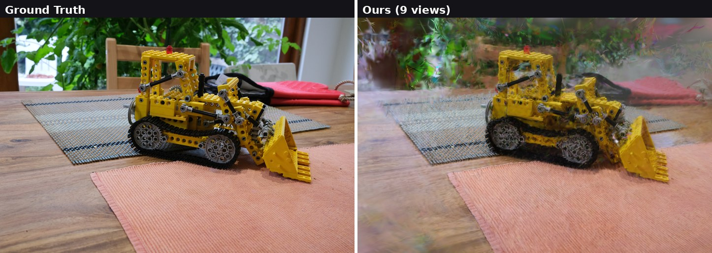
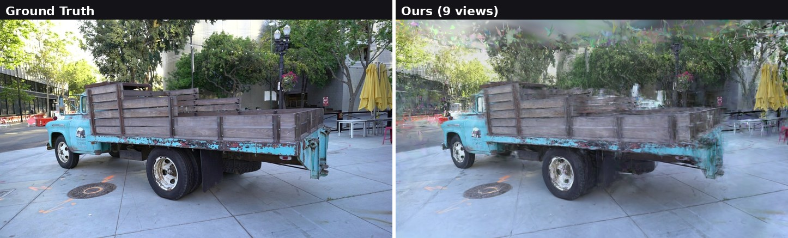
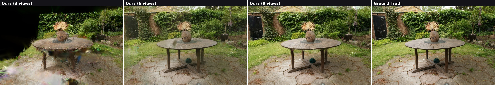

Novel view synthesis from a small number of input views is an important problem in various applications, including virtual and augmented reality, digital twins, robotics, and autonomous driving simulation. However, when the input views are sparse, Gaussian Splatting-based methods often struggle to reconstruct stable scene geometry. This problem becomes more severe in unbounded outdoor scenes, where limited view overlap and large unobserved regions lead to inaccurate depth estimation and floating artifacts. Recent studies address these limitations either by stabilizing geometry or by using diffusion-generated pseudo-views as additional supervision. However, geometry stabilization alone cannot sufficiently constrain unobserved regions, while generated pseudo-views may contain hallucinated or temporally inconsistent content. Using such generated views uniformly as supervision can therefore accumulate errors during optimization.
This research proposes a reliability-guided diffusion supervision method for controlling the uncertainty of generated pseudo-views in sparse-view 3D Gaussian Splatting. The proposed method combines depth-consistency regularization with reliability-guided pseudo-view supervision. It stabilizes the depth structure by regularizing the depth rendered at pseudo-view cameras toward the depth rendered by a pre-trained baseline 3D Gaussian model, mainly in observed regions. Dense-stereo geometry is used for point-cloud initialization and as a reliability prior. The supervision strength of generated views is then adjusted by combining hallucination detection, frame-level reliability, and pixel-level reliability. During diffusion sampling, latent-space blending preserves information in observed regions. In this way, generated pseudo-views are used as reliability-weighted cues for complementing unobserved regions, improving geometric stability under limited input views and reducing distortions caused by unreliable generated views.
Given sparse input views with known camera poses, we initialize a Gaussian field from a point cloud (e.g. DUSt3R) and render guidance trajectories with a frozen base renderer. A video diffusion model refines these trajectories into consistent pseudo-observations, which are distilled back into the Gaussian field during optimization. Replace this text and figure with your own.
Ground truth vs. our renderings (9 input views).

Garden

Bicycle

Kitchen

Truck

More input views yield sharper detail; quality degrades gracefully down to 3 views.
PSNR (dB) ↑ on held-out test views (every-8th split). Higher is better.
Measured with our pipeline; replace with your final paper numbers.
| Dataset | Scene | 3 views | 6 views | 9 views |
|---|---|---|---|---|
| Mip-NeRF 360 | Bicycle | 14.77 | 16.56 | 17.51 |
| Flowers | 11.02 | 12.48 | 13.69 | |
| Garden | 14.42 | 17.63 | 18.95 | |
| Stump | 16.33 | 17.69 | 17.89 | |
| Kitchen | 16.16 | 18.64 | 18.87 | |
| Tanks & Temples (3→4 views) | Truck | 13.97 | 15.62 | 16.44 |
| Train | 12.70 | 12.67 | 14.28 | |
| Barn | 13.13 | 13.73 | 14.40 | |
| Ignatius | 11.15 | 11.71 | 12.17 | |
| Caterpillar | 11.14 | 12.20 | 13.53 |
360° orbit renderings from 9 input views. Drag each slider to compare; same camera trajectory throughout. Per scene: left = Baseline vs. Our Baseline (geometry), right = Baseline vs. GuidedVD.
Baseline vs. Our Baseline
Baseline vs. GuidedVD
Baseline vs. Our Baseline
Baseline vs. GuidedVD
Baseline vs. Our Baseline
Baseline vs. GuidedVD
Baseline vs. Our Baseline
Baseline vs. GuidedVD
Baseline vs. Our Baseline
Baseline vs. GuidedVD
Baseline vs. Our Baseline
Baseline vs. GuidedVD
Baseline vs. Our Baseline
Baseline vs. GuidedVD
Baseline vs. Our Baseline
Baseline vs. GuidedVD
@article{grades,
title = {GradeS: Geometry-Aware Reliability-Guided Diffusion Supervision for Sparse-View 3D Gaussian Splatting},
author = {Choi, Eunhye},
journal = {arXiv preprint arXiv:XXXX.XXXXX},
year = {2026}
}